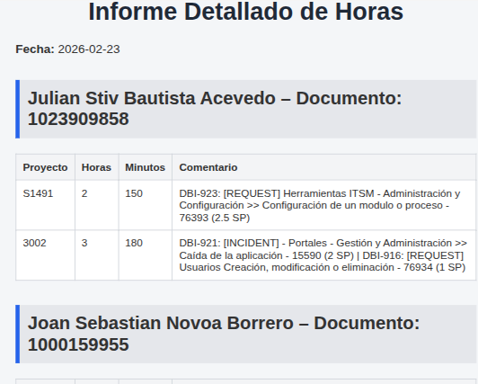

Descripción General
El Agente de Reportes permite a las organizaciones generar reportes automáticos, dinámicos y personalizados sin intervención manual. Se integra con sistemas como Jira, bases de datos, herramientas BI y plataformas internas para consolidar información clave.
Beneficios Clave
- Generación automática de reportes periódicos
- Reducción de errores humanos
- Visualización clara de métricas
- Ahorro significativo de tiempo operativo
- Personalización por rol o área

Casos de Uso
📈 Reportes Ejecutivos
Genera reportes semanales o mensuales para dirección con KPIs clave y visualizaciones claras.
🛠️ Seguimiento Operativo
Control de tickets, incidencias y requerimientos por estado, prioridad o responsable.
📊 Análisis de Productividad
Medición de desempeño de equipos, tiempos de respuesta y carga operativa.